A rat named Remy dreams of becoming a great chef despite his family's wishes, and the obvious problem of being a rat in a decidedly rodent-phobic profession. When fate places Remy in the sewers of Paris, he finds himself ideally situated beneath a restaurant made famous by his culinary hero, Auguste Gusteau. Remy's passion for cooking soon sets into motion a hilarious and exciting rat race that turns the world of Paris upside down.
Rats are no strangers to rejection, but Remy, a rat who longs to be a great chef, has more than the usual obstacles to overcome. His remarkable sense of smell and genius for combining flavors puts him head and shoulders above most human chefs. However, in the rat world he’s resigned to a life of being the “poison sniffer,” using his unique talent to pick out the safe garbage for his family to eat.
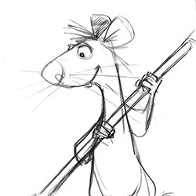

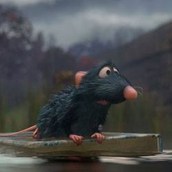

Linguini, a timid and well-meaning young man, is the new garbage boy at Gusteau’s. After a series of ill-fated jobs, Linguini is desperate to hold onto this one, which he sees as his last hope. A chance encounter with Remy thrusts Linguini into a highly unusual “ghost-cooking” relationship, in which he provides the gangly brawn for Remy’s culinary brains.
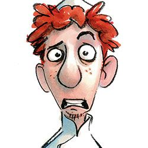
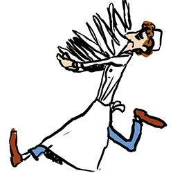


Colette is the toughest chef and the only female in the kitchen at Gusteau’s. Her grit, talent, and intimidating air have brought her far, but years of climbing the ladder in the male-dominated world of haute cuisine have made her wary and self-contained. At first, she is exasperated at being assigned to babysit Linguini as he begins his trial period as a chef.


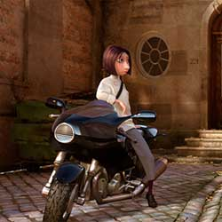
The late Auguste Gusteau, France’s all-time greatest culinary genius, is the author of Anyone Can Cook, the cookbook that inspires Remy's dream of becoming a chef. Gusteau's Paris restaurant became a landmark on the strength of his imaginative vision and masterful preparation, which simultaneously honored and played with the traditions of French cuisine.
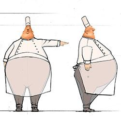
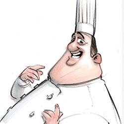
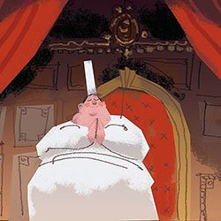
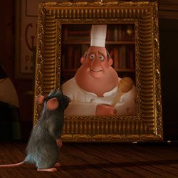
Emile, Remy’s little brother, is a rat’s rat—a little overweight and good-natured, he loves life and all things edible and inedible. He doesn’t always understand the finer points of his brother’s obsession with good food, but he is always ready to support Remy on one of his harebrained errands or cheer him up when he's feeling low.


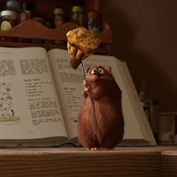

Anton Ego, the most powerful food critic in Paris, can make or break a restaurant with a single review. The sight of his dour, colorless, unsmiling face strikes fear into the heart of even the most complacently successful of culinary celebrities. Chefs have become so afraid of displeasing “The Grim Eater,” as he is commonly known, that no one dares to change a menu without his blessing.
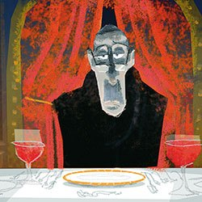
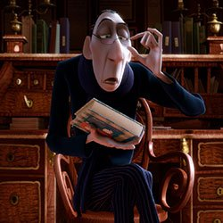


On one side, Gusteau’s hushed, luxurious restaurant is almost like a theater, explained Production Designer Harley Jessup. On the other side is the clattery intensity of the kitchen. “So the doorway into the dining room is almost like a stage proscenium, where waiters come out from backstage to present dishes to the audience of diners,” Jessup noted. “We also thought of the dining room as a palace for food and designed it both to awe the viewer and to make the food and the diners look good.”
Brad Bird envisioned Linguini’s apartment as the cheapest in Paris. So the design took an unintended living space, much like an attic or storage space, that had been converted with as many inconveniences as possible. For example, Linguini has to climb up four flights of stairs with his bicycle that couldn't be left on the street for fear of being stolen, the door opens just enough to awkwardly enter, and he has to bend and stretch to maneuver around the furniture—but Linguini has what he needs: an incredible view of Paris to help him dream.
Going strictly by the storyline, Ratatouille could have taken place almost entirely within the kitchen. But the filmmakers took every opportunity to move the action out into the photogenic streets of Paris. While the City of Light would provide eye candy for the audience, it would also serve the story, a constant reminder of the rarefied human world that made Remy’s dream so daunting.
Production Designer Harley Jessup had long read about Paris's famous sewers, but when the Pixar team went to France for a firsthand viewing, they weren’t quite as evocative and romantic as envisioned. “So, because it’s entertainment, because we wanted to do something that was bigger than life and caricatured, we felt the audience would respond to us taking some artistic license and creating a grander, more Phantom of the Opera, Les Miserables-type of sewer.“
A colorscript is a sequence of small pastel drawings or paintings used to emphasize color in each scene and establish a film's visual language. Production Designer Harley Jessup conjured up his own admittedly “informal recipe” for a Ratatouille colorscript using gathered bunches of dyed yarns to create a rat character palette of stylized fur colors. Working with the film’s Director of Photography for Lighting Sharon Calahan, Jessup fashioned a coolly colored underground rat world against the warm, rich tones of the human world.
SCREENWRITER AND DIRECTOR BRAD BIRD
PRODUCED BY BRAD LEWIS
EXECUTIVE PRODUCER JOHN LASSETER, ANDREW STANTON
ASSOCIATE PRODUCER GALYN SUSMAN
ORIGINAL STORY BY JAN PINKAVA, JIM CAPOBIANCO, BRAD BIRD
MUSIC BY MICHAEL GIACCHINO
STORY SUPERVISOR JASON KATZ
FILM EDITOR DARREN HOLMES
SUPERVISING TECHNICAL DIRECTOR MICHAEL FONG
SUPERVISING TECHNICAL DIRECTOR MICHAEL FONG
PRODUCTION DESIGNER HARLEY JESSUP
SUPERVISING ANIMATORS DYLAN BROWN, MARK WALSH
DIRECTOR OF PHOTOGRAPHY-CAMERA ROBERT ANDERSON
DIRECTOR OF PHOTOGRAPHY-LIGHTING SHARON CALAHAN
CHARACTER DESIGN JASON DEAMER, GREG DYKSTRA, CARTER GOODRICH, DAN LEE
CHARACTER SUPERVISOR BRIAN GREEN
SETS ART DIRECTOR ROBERT KONDO
SETS SUPERVISOR DAVID EISENMANN
SHADING ART DIRECTIOR BELINDA VAN VALKENBURG
SHADING SUPERVISOR DANIEL MCCOY
GLOBAL TECHNOLOGY SUPERVISOR WILLIAM REEVES
EFFECTS SUPERVISOR APURVA SHAH
SIMULATION SUPERVISOR CHRISTINE WAGGONER
GROOM SUPERVISOR SANJAY BAKSHI
CROWDS SUPERVISOR ZIAH SARAH FOGEL
PRODUCTION MANAGER NICOLE PARADIS GRINDLE
SOUND DESIGNER RANDY THOM
CASTING BY KEVIN REHER, NATALIE LYON
remy FREDRICKSEN ED ASNER
CHARLES ego CHRISTOPHER PLUMMER
REMY PATTON OSWALT
LINGUINI LOU ROMANO
BETA DELROY LINDO
EMILE PETER SOHN
ANTON EGO PETER O’TOOLE
GUSTEAU BRAD GARRETT
COLETTE JANEANE GAROFALO